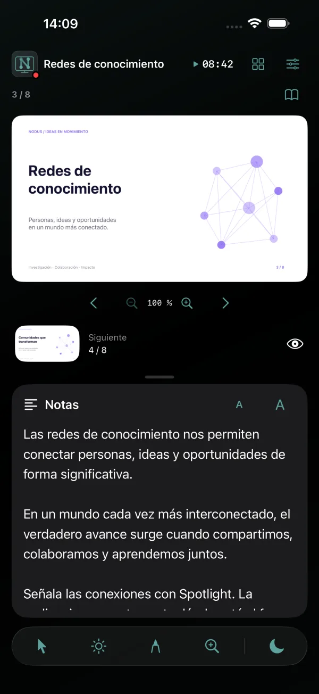

Nodus
Open tools for research Made to be yours
Free, open-source, local-first apps for research, teaching and study: two applications for your desktop and four companions for iPhone and iPad.
Read on: the Nodus app · Nodus for academic research · the Zotero integration · about the project
Two applications for your desk.
One workspace for research, study and teaching, and one for the photographs and visual sources that history is made of. Both keep your work on your own computer.
Nodus Research
A workspace that brings sources, notes, data, ideas and learning materials together. Each project lives in a vault shaped for the work it holds.
Academic. Turn a Zotero library into a graph of ideas for your literature review, with debates, gaps, argument maps, Deep Research and verifiable citations.
Study. Subjects, readings and recordings, with question banks, practice tests, flashcards and spaced review.
Teaching. Courses, timetables, gradebooks, rubrics and exams. Student data is never sent to a model.
Databases and Genealogy. Typed tables with relations and formulas, and family trees that keep every link tied to its evidence.


Nodus Imago
For historians, art historians and archivists who work with photographs, engravings and other images: catalogue them, search them and read them as historical sources.
Catalogue with your own fields and historical dates, and let AI propose descriptions, tags and transcriptions you approve.
Search by words, meaning, likeness or a detail marked inside a photograph.
Compare historical photographs: variants, overlays and then and now beside the same place today.
Analyse the collection with statistics, maps, a timeline and a network, linked to Wikidata, Getty and Iconclass.


Photographs by Jean Laurent and his studio from public collections. Image credits.
Companions for iPhone and iPad.
Take your research with you, read and listen to your library, run your presentations and make a little quiet room to work in.

Nodus Link
Your Nodus Research on iPhone and iPad: ideas, graph, argument maps, Deep Research, the dictionary and saved podcasts, over a private connection to your desktop.
iPhone · iPad · Beta
Explore Nodus Link
Nodus Reader
Read EPUB and PDF beautifully, with highlights and notes, and listen to your library with AI voices that run on your device.
iPhone · iPad · Mac soon
Explore Nodus Reader
Nodus Presenter
Run Nodus Research presentations from your phone: slides, speaker notes, pointer, spotlight, drawing and zoom.
iPhone · iPad · App Store
Explore Nodus Presenter
Nodus Drift
Ambient sounds for focus, rest and sleep: 89 sounds, mixes of up to six, fully offline and private.
iPhone · iPad · Beta
Explore Nodus DriftFree to use. Yours to keep.
Research should be open. Every Nodus app is free and open source: Nodus Research, Imago, Link, Reader and Presenter under AGPL-3.0-only, and Drift under MIT. There are no accounts, and your work stays on your own devices.